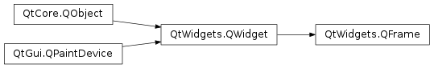

QFrame¶
Inherited by: QToolBox, QStackedWidget, QLabel, QLCDNumber, QAbstractScrollArea, QGraphicsView, QtCharts.QChartView, QMdiArea, QScrollArea, QAbstractItemView, QHeaderView, QTableView, QTableWidget, QColumnView, QTreeView, QTreeWidget, QHelpContentWidget, QListView, QListWidget, QUndoView, QHelpIndexWidget, QSplitter, QPlainTextEdit, QTextEdit, QTextBrowser
Synopsis¶
Functions¶
- def
drawFrame(arg__1) - def
frameRect() - def
frameShadow() - def
frameShape() - def
frameStyle() - def
frameWidth() - def
initStyleOption(option) - def
lineWidth() - def
midLineWidth() - def
setFrameRect(arg__1) - def
setFrameShadow(arg__1) - def
setFrameShape(arg__1) - def
setFrameStyle(arg__1) - def
setLineWidth(arg__1) - def
setMidLineWidth(arg__1)
Detailed Description¶
The
PySide2.QtWidgets.QFrameclass is the base class of widgets that can have a frame.
PySide2.QtWidgets.QMenuuses this to “raise” the menu above the surrounding screen.PySide2.QtWidgets.QProgressBarhas a “sunken” look.PySide2.QtWidgets.QLabelhas a flat look. The frames of widgets like these can be changed.label = QLabel() label.setFrameStyle(QFrame.Panel | QFrame.Raised) label.setLineWidth(2) pbar = QProgressBar() label.setFrameStyle(QFrame.NoFrame)The
PySide2.QtWidgets.QFrameclass can also be used directly for creating simple placeholder frames without any contents.The frame style is specified by a
frame shapeand ashadow stylethat is used to visually separate the frame from surrounding widgets. These properties can be set together using thePySide2.QtWidgets.QFrame.setFrameStyle()function and read withPySide2.QtWidgets.QFrame.frameStyle().The frame shapes are
NoFrame,Box,Panel,StyledPanel,HLineandVLine; the shadow styles arePlain,RaisedandSunken.A frame widget has three attributes that describe the thickness of the border:
PySide2.QtWidgets.QFrame.lineWidth(),PySide2.QtWidgets.QFrame.midLineWidth(), andPySide2.QtWidgets.QFrame.frameWidth().
- The line width is the width of the frame border. It can be modified to customize the frame’s appearance.
- The mid-line width specifies the width of an extra line in the middle of the frame, which uses a third color to obtain a special 3D effect. Notice that a mid-line is only drawn for
Box,HLineandVLineframes that are raised or sunken.- The frame width is determined by the frame style, and the
PySide2.QtWidgets.QFrame.frameWidth()function is used to obtain the value defined for the style used.The margin between the frame and the contents of the frame can be customized with the
QWidget.setContentsMargins()function.This table shows some of the combinations of styles and line widths:

-
class
PySide2.QtWidgets.QFrame([parent=nullptr[, f=Qt.WindowFlags()]])¶ Parameters: - f –
PySide2.QtCore.Qt.WindowFlags - parent –
PySide2.QtWidgets.QWidget
Constructs a frame widget with frame style
NoFrameand a 1-pixel frame width.The
parentandfarguments are passed to thePySide2.QtWidgets.QWidgetconstructor.- f –
-
PySide2.QtWidgets.QFrame.Shape¶ This enum type defines the shapes of frame available.
Constant Description QFrame.NoFrame PySide2.QtWidgets.QFramedraws nothingQFrame.Box PySide2.QtWidgets.QFramedraws a box around its contentsQFrame.Panel PySide2.QtWidgets.QFramedraws a panel to make the contents appear raised or sunkenQFrame.StyledPanel draws a rectangular panel with a look that depends on the current GUI style. It can be raised or sunken. QFrame.HLine PySide2.QtWidgets.QFramedraws a horizontal line that frames nothing (useful as separator)QFrame.VLine PySide2.QtWidgets.QFramedraws a vertical line that frames nothing (useful as separator)QFrame.WinPanel draws a rectangular panel that can be raised or sunken like those in Windows 2000. Specifying this shape sets the line width to 2 pixels. is provided for compatibility. For GUI style independence we recommend using instead. When it does not call
PySide2.QtWidgets.QStyle, Shape interacts withQFrame.Shadow, thePySide2.QtWidgets.QFrame.lineWidth()and thePySide2.QtWidgets.QFrame.midLineWidth()to create the total result. See the picture of the frames in the main class documentation.See also
QFrame.ShadowQFrame.style()QStyle.drawPrimitive()
-
PySide2.QtWidgets.QFrame.Shadow¶ This enum type defines the types of shadow that are used to give a 3D effect to frames.
Constant Description QFrame.Plain the frame and contents appear level with the surroundings; draws using the palette QPalette.WindowTextcolor (without any 3D effect)QFrame.Raised the frame and contents appear raised; draws a 3D raised line using the light and dark colors of the current color group QFrame.Sunken the frame and contents appear sunken; draws a 3D sunken line using the light and dark colors of the current color group Shadow interacts with
QFrame.Shape, thePySide2.QtWidgets.QFrame.lineWidth()and thePySide2.QtWidgets.QFrame.midLineWidth(). See the picture of the frames in the main class documentation.See also
QFrame.ShapePySide2.QtWidgets.QFrame.lineWidth()PySide2.QtWidgets.QFrame.midLineWidth()
-
PySide2.QtWidgets.QFrame.StyleMask¶ This enum defines two constants that can be used to extract the two components of
PySide2.QtWidgets.QFrame.frameStyle():Constant Description QFrame.Shadow_Mask The QFrame.Shadowpart ofPySide2.QtWidgets.QFrame.frameStyle()QFrame.Shape_Mask The QFrame.Shapepart ofPySide2.QtWidgets.QFrame.frameStyle()Normally, you don’t need to use these, since
PySide2.QtWidgets.QFrame.frameShadow()andPySide2.QtWidgets.QFrame.frameShape()already extract theQFrame.Shadowand theQFrame.Shapeparts ofPySide2.QtWidgets.QFrame.frameStyle().
-
PySide2.QtWidgets.QFrame.drawFrame(arg__1)¶ Parameters: arg__1 – PySide2.QtGui.QPainterUsed by
PySide2.QtWidgets.QLabelandPySide2.QtWidgets.QLCDNumber
-
PySide2.QtWidgets.QFrame.frameRect()¶ Return type: PySide2.QtCore.QRect
-
PySide2.QtWidgets.QFrame.frameShadow()¶ Return type: PySide2.QtWidgets.QFrame.Shadow
-
PySide2.QtWidgets.QFrame.frameShape()¶ Return type: PySide2.QtWidgets.QFrame.Shape
-
PySide2.QtWidgets.QFrame.frameStyle()¶ Return type: PySide2.QtCore.intReturns the frame style.
The default value is
QFrame.Plain.
-
PySide2.QtWidgets.QFrame.frameWidth()¶ Return type: PySide2.QtCore.int
-
PySide2.QtWidgets.QFrame.initStyleOption(option)¶ Parameters: option – PySide2.QtWidgets.QStyleOptionFrameInitializes
optionwith the values from thisPySide2.QtWidgets.QFrame. This method is useful for subclasses when they need aPySide2.QtWidgets.QStyleOptionFramebut don’t want to fill in all the information themselves.See also
-
PySide2.QtWidgets.QFrame.lineWidth()¶ Return type: PySide2.QtCore.int
-
PySide2.QtWidgets.QFrame.midLineWidth()¶ Return type: PySide2.QtCore.int
-
PySide2.QtWidgets.QFrame.setFrameRect(arg__1)¶ Parameters: arg__1 – PySide2.QtCore.QRectSee also
-
PySide2.QtWidgets.QFrame.setFrameShadow(arg__1)¶ Parameters: arg__1 – PySide2.QtWidgets.QFrame.Shadow
-
PySide2.QtWidgets.QFrame.setFrameShape(arg__1)¶ Parameters: arg__1 – PySide2.QtWidgets.QFrame.Shape
-
PySide2.QtWidgets.QFrame.setFrameStyle(arg__1)¶ Parameters: arg__1 – PySide2.QtCore.intSets the frame style to
style.The
styleis the bitwise OR between a frame shape and a frame shadow style. See the picture of the frames in the main class documentation.The frame shapes are given in
QFrame.Shapeand the shadow styles inQFrame.Shadow.If a mid-line width greater than 0 is specified, an additional line is drawn for
RaisedorSunkenBox,HLine, andVLineframes. The mid-color of the current color group is used for drawing middle lines.
-
PySide2.QtWidgets.QFrame.setLineWidth(arg__1)¶ Parameters: arg__1 – PySide2.QtCore.intSee also
-
PySide2.QtWidgets.QFrame.setMidLineWidth(arg__1)¶ Parameters: arg__1 – PySide2.QtCore.int
© 2018 The Qt Company Ltd. Documentation contributions included herein are the copyrights of their respective owners. The documentation provided herein is licensed under the terms of the GNU Free Documentation License version 1.3 as published by the Free Software Foundation. Qt and respective logos are trademarks of The Qt Company Ltd. in Finland and/or other countries worldwide. All other trademarks are property of their respective owners.